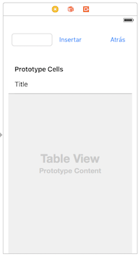
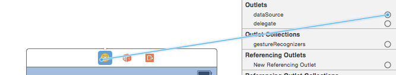

Crea una pantalla que sea una tabla estática, al estilo de la aplicación de settings de iOS, con las siguientes condiciones:
Debe tener al menos tres secciones, con el número de filas que quieras en cada una.
Algunas celdas deben tener iconos. Puedes por ejemplo usar estos, o cualquier otro que encuentres por la web
Prueba diferentes tipos de accesory en las celdas (accesibles en las propiedades de la celda)
Una de las celdas tendrá como título “Ver lista” y nos llevará a la segunda pantalla (ahora veremos cómo)
Tabla dinámica (2 puntos)
Crear la interfaz y la navegación entre pantallas
Crea otra pantalla, al estilo de la que aparece en la figura. Tiene que tener los siguientes componentes:
Un text field
Un par de buttons
Un table view

Aunque habría que usar autolayout, para simplificar el ejercicio puedes ignorar este aspecto.
Conecta la pantalla inicial con esta mediante un segue, asociado a la celda con título “ver lista”. Para crearlo simplemente haz Ctrl+ arrastrar desde la celda hasta la pantalla destino.
Recuerda que para poder volver atrás necesitarás implementar un método en la pantalla inicial con la siguiente signatura (aunque puedes cambiar el nombre)
Ahora asocia el botón “atrás” con este método haciendo Ctrl + arrastrar del botón al icono “exit” que aparece en la parte superior del “view controller”, y eligiendo el método volverAtras (o como lo hayas llamado) en el menú popup.
Comprueba que la navegación funciona y que puedes moverte entre las dos pantallas
Mostrar datos en la tabla
Primero crea una nueva clase que hará de view controller de la segunda pantalla: menú File > New > File, selecciona la plantilla de Cocoa Touch Class y llama a la nueva clase ListaViewController, asegurándote de que es subclase de UIViewController.
Haz que la clase creada sea efectivamente el controller de la segunda pantalla seleccionando esta, yendo al identity inspector (icono ) y poniendo ListaViewController como valor de la propiedad Class.
Convierte al ListaViewController en el datasource de la tabla seleccionándola, yendo al connections inspector (icono ) y arrastrando desde el Outletdatasource hasta el icono amarillo del view controller de la parte superior de la segunda pantalla. 
Haz que el ListaViewController implemente el protocolo UITableViewDataSource poniéndolo en el ListaViewController.h, cuya cabecera quedará:
Ahora tendrás que implementar tú de manera adecuada los métodos:
tableView:numberOfRowsInSection: recuerda que debe devolver el número de filas de la tabla
tableView:cellForRowAtIndexPath:: recuerda que debe devolver la celda para una fila determinada
Insertar filas
Vamos a hacer que se pueda editar la tabla. Para ello necesitas algún objeto que actúe de delegate. Vamos a cargarle la responsabilidad al ListaViewController:
En el connections inspector conecta gráficamente el Outletdelegate al ListaViewController
Haz que el ListaViewController implemente también el protocolo UITableViewDelegate . Recuerda que debes modificar el .h:
En la pantalla de lista, haz que cuando se escriba un texto en el campo de texto y se pulse el botón Insertar se añada el texto como nueva celda de la tabla. En el método al que llames cuando pulses el botón tendrás que:
Insertar el dato en el array nombres. Puedes usar el método addObject: para añadir al final del array
Insertar la fila en la tabla con insertRowsAtIndexPaths:withRowAnimation:. Puedes hacer algo como:
//IMPORTANTE: en lugar de numeroDeFila pon la fila en la que quieras insertar
//obtiene un indexPath a partir de un número de fila y sección
NSIndexPath *indexPath = [NSIndexPath indexPathForRow:numeroDeFila inSection:0];
//Inserta las nuevas filas (en este caso una sola)
[self.tableView insertRowsAtIndexPaths:@[indexPath] withRowAnimation:UITableViewRowAnimationAutomatic];
Eliminar filas
Añádele a la pantalla con la lista de nombres un botón “Editar tabla”. Haz que cuando se pulse el botón la tabla se ponga en “modo edición” llamando a setEditing:animated: sobre la tabla.
Para que se borre no solo visualmente la fila sino también el nombre del array tendrás que implementar el método tableView:commitEditingStyle:forRowAtIndexPath:.
 ) y poniendo
) y poniendo  ) y arrastrando desde el
) y arrastrando desde el